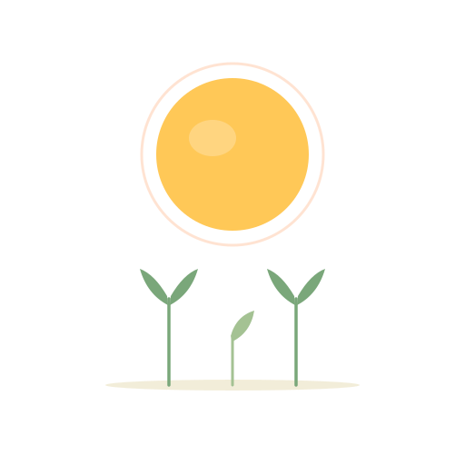

1 / 3
どちらとも言えないときは、最近の自分に近いほうで大丈夫です。
いまの、わが家に近いのは
18問で、もう少し詳しく見る（約3分）
3問は、いちばん大きな3つの傾向だけを見たものです。
18問版では、きょうだいや年齢を含めて、もう少し細かく出ます。
このタイプの詳しい話を読む

ひだまりこそだち1 / 3
どちらとも言えないときは、最近の自分に近いほうで大丈夫です。
いまの、わが家に近いのは
18問で、もう少し詳しく見る（約3分）
3問は、いちばん大きな3つの傾向だけを見たものです。
18問版では、きょうだいや年齢を含めて、もう少し細かく出ます。
このタイプの詳しい話を読む